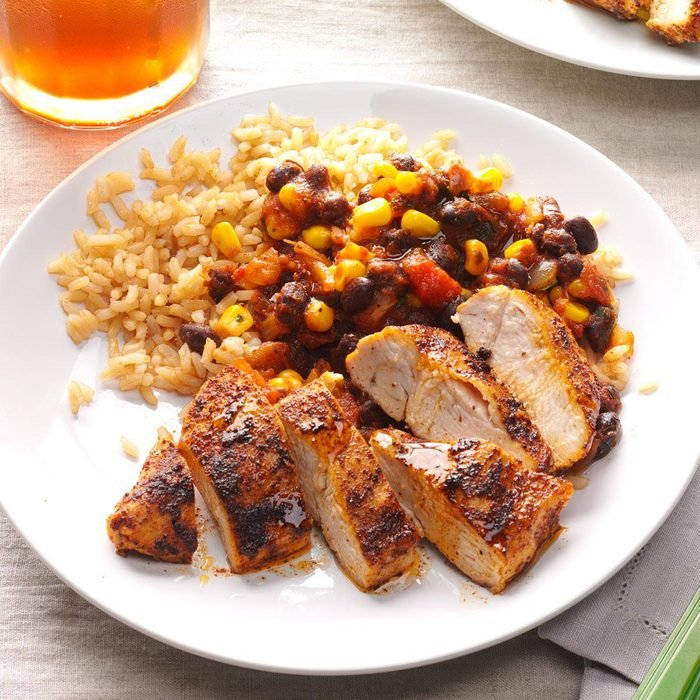

Spicy Chicken

Description
This recipe is a chicken based dish served with a side of rice and beans. The chicken
is coated in chilipowder and cooked in a salsa that can vary in spiciness to your individual
taste.
Ingredients
- 3 teaspoons chili powder
- 1 teaspoon ground cumin
- 1 teaspoon pepper
- 2 teaspoons canola oil
- 4 boneless skinless chicken breasts havles (4 ounces each)
- 1 can (15 ounces) black beans, rinsed and drained
- 1 cup frozen corn
- 1 cup salsa
- 2 cups hot cooked brown rice
Steps
- In a small bowl, mix seasonings; sprinkle over both sides of chicken. In a large nonstick skillet,
heat oil over medium heat. Brown chicken on both sides.
- Add beans, corn and salsa to skillet; cook, covered, 10-15 minutes or until a thermometer inserted in chicken
reads 165 degrees. Remove chicken from pan; cut into slices. Serve with bean mixture and rice.